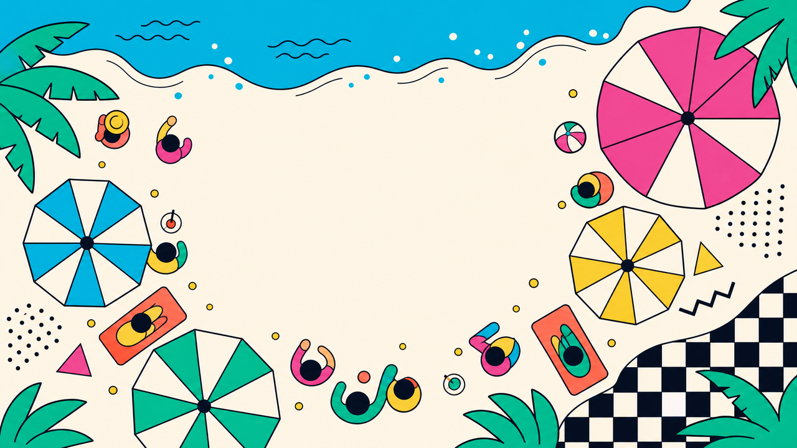
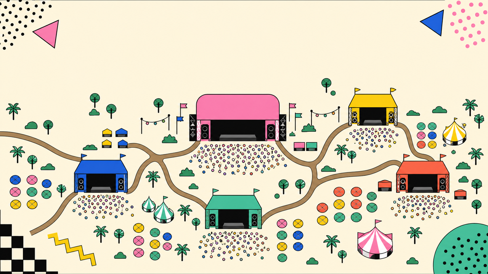

列奥纳多·达芬奇
Leonardo da Vinci (1452–1519)
文艺复兴的全才 — 画家·科学家·发明家·工程师

| 技法 | 原理 | 代表作品 |
|---|---|---|
| 晕涂法 Sfumato | 多层极薄透明颜料叠加，消除硬边界 | 蒙娜丽莎的面部 |
| 明暗法 Chiaroscuro | 强烈光影对比塑造立体感 | 岩间圣母 |
| 空气透视法 | 远景偏蓝、模糊，模拟大气散射 | 蒙娜丽莎背景 |
| 解剖学精确 | 基于30+具尸体解剖的肌肉骨骼研究 | 维特鲁威人 |
| 构图几何 | 金字塔/三角形构图增强稳定感 | 圣母子与圣安妮 |

达芬奇留下约7,200页手稿，涵盖绘画、解剖、工程、自然观察等领域。使用镜像书写(从右到左)。
| 手稿名称 | 页数 | 主要内容 | 现藏地 |
|---|---|---|---|
| 大西洋古抄本 | 1,119页 | 机械、数学、植物学 | 米兰安布罗西亚图书馆 |
| 阿伦德尔手稿 | 283页 | 物理、力学、几何 | 大英图书馆 |
| 温莎手稿 | 600+页 | 解剖学、人体素描 | 温莎城堡皇家收藏 |
| 莱斯特手稿 | 72页 | 水文学、天文学 | 比尔·盖茨私藏 |
| 巴黎手稿(A-M) | 964页 | 光学、飞行、建筑 | 法兰西学院 |